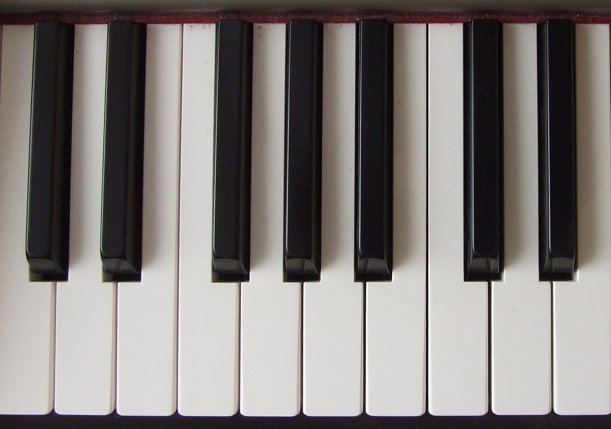
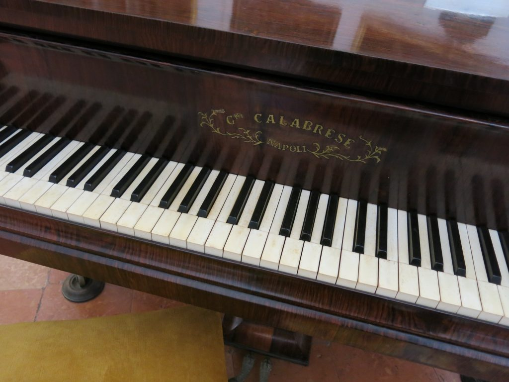
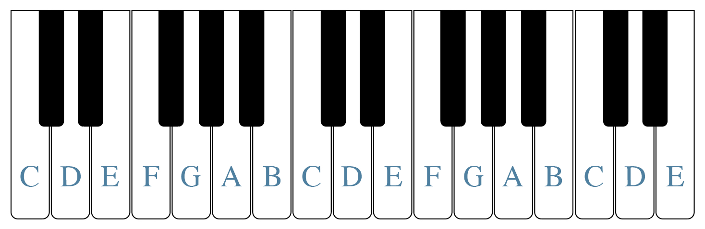
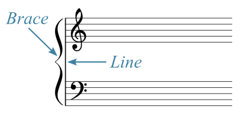
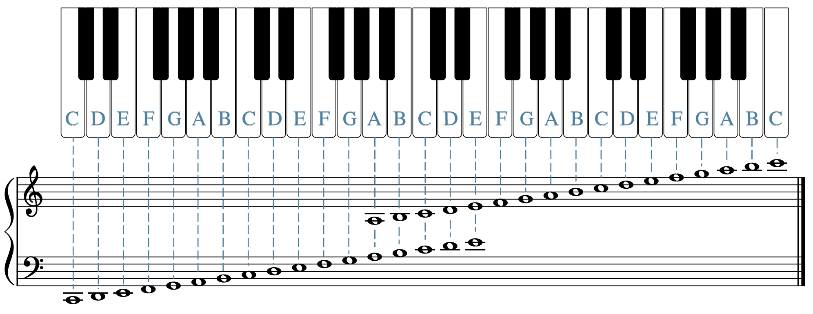
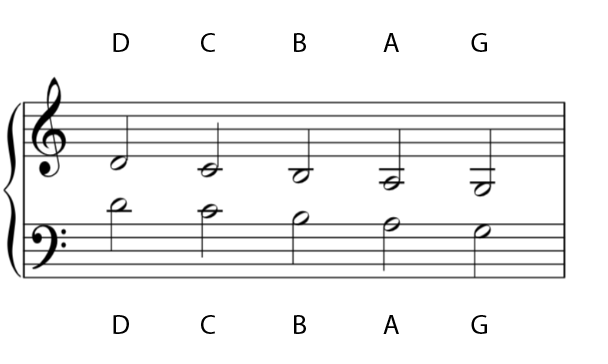
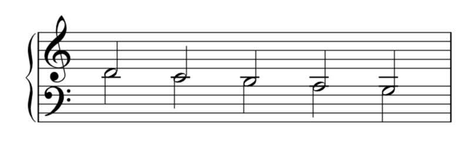
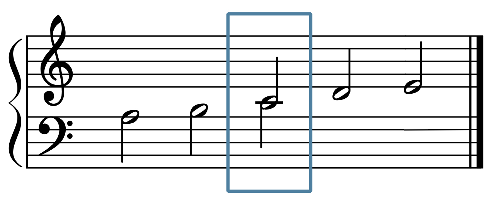
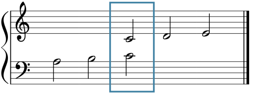
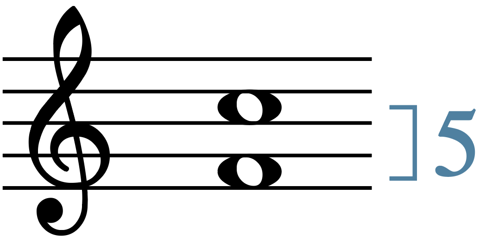

Open Music Theory：繁體中文版
鍵盤與大譜表
許多學生發現，透過身體動作與感覺參與音樂，樂理就更容易學習。換句話說，親自演奏鋼琴等樂器、實際發出聲音，有助於你在心中更清楚地看見並內在聽想正在記寫或研究的音樂。這能讓學生更快理解並「感覺到」不同音高之間的關係。
查看英文原文
Key Takeaways
- Playing the piano will help you in your music theoretical studies by allowing you to engage kinesthetically with music.
- A pattern of black keys grouped into twos and threes repeats on the piano keyboard for seven octaves.
- The white note C is to the immediate left of the two-note black key pattern, while the white note F is to the immediate left of the three-note black key pattern.
- Piano players, also called pianists, read music on the grand staff.
- Middle C is the note that appears on the line between the two staves in a grand staff.
- When counting intervals on a piano keyboard, always count the first note as “one.”
Many students find studying music theory easier when they engage with music kinesthetically. In other words, physically creating sounds by playing a musical instrument (such as the piano) helps you to better visualize and audiate the music you are writing down or studying. This allows students to understand and “feel” the relationship between different pitches more quickly.
學著在鋼琴上彈奏音符，是透過身體動作參與音樂的一種簡單方法。學校也許有可使用的傳統鋼琴或電子鍵盤；如果願意，你也可以購買價格不高的電子鍵盤。另一種選擇是下載能在手機上彈奏的免費鋼琴應用程式，例如 Tiny Piano。


查看英文原文
The Piano Keyboard
Learning to play notes on the piano is one easy way to engage with music kinesthetically. You may find access to a piano keyboard (acoustic or electronic) at your school. You may also purchase an inexpensive electronic keyboard if you like. Another option is to download a free piano app that you can play on your phone, such as Tiny Piano.
In Example 1, notice that the keyboard has both white keys and black keys. The black keys are grouped into sets of either three or two. In Example 2, notice that the sets of three and two black keys alternate throughout the entire length of a piano keyboard, repeating the pattern for each octave.
坐在鋼琴前時，應坐直，頭部保持在肩膀上方，肩膀自然放低。手肘與身體之間留出舒適距離，手指維持拱形，就像要從書架上抽出一本書。膝蓋與手腕保持靈活，不要僵硬；除非使用踏板，雙腳應平放地面。
例 3說明正確的鋼琴演奏姿勢。
例 3。克里斯多夫紐波特大學的 Benjamin Corbin 博士示範正確的鋼琴演奏姿勢。
查看英文原文
Playing the Piano
When you sit at the piano, it is important to sit up straight, keeping your head over your shoulders, which should be kept down. Your elbows should be a comfortable distance from your body, and your fingers should remain arched (as if you were pulling a library book off of a shelf). Keep your knees and wrists flexible (not stiff), and keep your feet flat on the ground unless you are using the pedals.
Example 3 explains how to achieve proper posture at the piano.
Example 3. Dr. Benjamin Corbin (Christopher Newport University) demonstrates proper piano posture.
例 4在鋼琴鍵盤上標出白鍵的字母音名。同樣的音名會出現在不同琴鍵上。如上一章所述，西方記譜法以 A、B、C、D、E、F、G 七個字母標示音高，並循環重複。由於西方體系採用八度等價原則，相隔一個八度的音具有相同字母音名。

在鋼琴鍵盤上，兩個一組的黑鍵緊鄰左側白鍵是 C；三個一組的黑鍵緊鄰左側白鍵則是 F。
你可以利用下列練習，辨識鋼琴鍵盤上白鍵的音名：
查看英文原文
Octave Equivalence and White Key Letter Names on the Piano Keyboard
Example 4 shows a piano keyboard with the letter names of the white key pitches labeled. The same letter names appear on different keys of the keyboard. As discussed in the previous chapter, pitches in Western musical notation are designated by the letters A, B, C, D, E, F, and G, repeating in a loop. Because of the principle of octave equivalence in the Western system, pitches separated by an octave have the same letter name.
On the piano keyboard, when the black keys appear as a set of two, the note to their immediate left is C. With a set of three black keys, the note to their immediate left is F.
You can practice identifying the white key notes on the piano keyboard in the following exercise:
鋼琴譜通常以大譜表同時使用高音與低音譜號，如例 5。大譜表的上方是高音譜號五線譜，下方是低音譜號五線譜，左側用一條直線與花括號連接。通常，鋼琴演奏者用左手彈較低的音，也就是低音譜號部分；右手彈較高的音，也就是高音譜號部分。

- Brace：花括號；
- Line：直線。

接著仔細看看，高音譜號五線譜下方，以及低音譜號五線譜上方，可能出現哪些加線音符。例 7標出其中幾個音的字母音名。每一組上下相對的音符雖然寫在不同譜號中，實際音高卻相同。符幹朝上的音符屬於高音譜號五線譜，符幹朝下的則屬於低音譜號五線譜。


例 9是兩行距離拉近的大譜表，C 音以方框圈出。框內的 C 稱為中央 C，因為在例 9這種上下靠近的大譜表中，它位於高音與低音譜號兩行之間的中央。此外，中央 C 在鋼琴鍵盤上也大約位於中間，通常在品牌名稱下方。


查看英文原文
The Grand Staff
Music for the piano is typically written in both the treble and bass clefs on a grand staff, as shown in Example 5. To make a grand staff, a staff with a treble clef is placed above a staff with a bass clef. The two staves are connected on the left side with a line and a brace. Typically, the pianist plays the lower notes (in the bass clef) with their left hand and the higher notes (in the treble clef) with their right hand.
Example 6 shows the lines and spaces on the grand staff labeled with letter names. As you can see, the letter names of the lines and spaces of the treble and bass clefs match what was discussed in the prior chapter (Reading Clefs).
Let’s take a closer look at the ledger-line notes that might appear below the treble staff and above the bass clef staff. Example 7 shows some of these notes, labeled with letter names. Each vertical pair of notes is the same pitch, even though the notes are notated in two different clefs. (The notes with upward-pointing stems belong to the treble clef staff, while the notes with downward-pointing stems belong to the bass clef staff.)
Example 8 shows the staves of Example 7 vertically condensed—how these notes would appear if there were not so much space in between the treble clef and bass clef staves of a grand staff. The letter names are the same in Example 8 as they were in Example 7.
Example 8. The staves of Example 7 have been vertically condensed and the two notes combined into one (with two stems).
Example 9 shows a vertically condensed grand staff with a box around the note C. This boxed C is called middle C, so named because in the vertically condensed grand staff shown in Example 9, it appears in the middle of the treble and bass clef staves. Additionally, middle C is the note that appears to be around the middle of a piano keyboard, usually underneath the brand name.
Example 10 shows Example 9 vertically expanded to its regular spacing, with middle C still boxed. Though it now appears in both the treble clef and bass clef staves, this note would still sound as the same pitch.
學習樂理時，經常需要測量或描述鋼琴鍵盤或五線譜上兩音之間的距離。在鍵盤或譜上數出的這個「音數」，稱為音程度數（generic interval）。計算時，第一個音必須算作一，而不是零。例 11在高音譜號五線譜上標出 F 與 C 兩個音。若逐一數過例 11中兩音之間的線與間，你可能會想這樣算：F 到 G 是一、G 到 A 是二、A 到 B 是三、B 到 C 是四；但這樣不正確。正確做法是先把 F 算作一，接著到 G 是二、到 A 是三、到 B 是四、到 C 是五。因此，F 到 C 包含五個音，而不是四個。音樂家與樂理學者會稱這兩音的距離為「五度」，此處只計度數，尚不區分音程性質。

- Gerou, Tom 與 Linda Lusk。1996。《記譜法必備辭典》（Essential Dictionary of Music Notation）。洛杉磯：Alfred。
- Hiley, David。2001。〈五線譜〉（“Staff”）。Grove Music Online。https://doi.org/10.1093/gmo/9781561592630.article.26519。
- Hoover, Cynthia Adams 與 Edwin M. Good。2013。〈鋼琴〉（“Piano”）。Grove Music Online。https://doi.org/10.1093/gmo/9781561592630.article.A2257895。
- Jacobson, Jeanie M.。2015。《專業鋼琴教學第一卷：初級程度》（Professional Piano Teaching Volume 1: Elementary Levels）。洛杉磯：Alfred Music。
- Lindley, Mark，Murray Campbell 與 Clive Greated 修訂。2011。〈音程〉（“Interval”）。Grove Music Online。https://doi.org/10.1093/gmo/9781561592630.article.13865。
- McGrain, Mark。1986。《記譜法》（Music Notation）。波士頓：Berklee Press。
- Roskell, Penelope。2020。《全方位鋼琴家：從健康技巧到自然的藝術表現》（The Complete Pianist: from Healthy Technique to Natural Artistry）。紐約：Peters Edition。
媒體素材署名
- 鋼琴鍵盤，© Wikimedia Commons，採用 CC BY-SA（姓名標示－相同方式分享）授權。
- 完整鋼琴鍵盤，© Wikimedia Commons，採用 CC BY-SA（姓名標示－相同方式分享）授權。
- 鍵盤白鍵，© Sarah Louden，採用 CC BY-SA（姓名標示－相同方式分享）授權。
- 大譜表的花括號與直線，© Sarah Louden，採用 CC BY-SA（姓名標示－相同方式分享）授權。
- 標示音名的大譜表，© Sarah Louden，採用 CC BY-SA（姓名標示－相同方式分享）授權。
- 大譜表加線上的相同音高（圖 2），© Chelsey Hamm，採用 CC BY-SA（姓名標示－相同方式分享）授權。
- 譜表下方加線的相同音高（圖 2），© Chelsey Hamm，採用 CC BY-SA（姓名標示－相同方式分享）授權。
- 兩行靠近時的中央 C，© Sarah Louden，採用 CC BY-SA（姓名標示－相同方式分享）授權。
- 上下間距拉開、框出 C 的大譜表，© Sarah Louden，採用 CC BY-SA（姓名標示－相同方式分享）授權。
- 五度音程，© Sarah Louden，採用 CC BY-SA（姓名標示－相同方式分享）授權。
查看英文原文
Generic Intervals (Interval Size)
Often in music theory, you will want to measure or describe the distance between notes—either on a piano keyboard or on a staff. This “count” of notes on a piano keyboard or staff is called a generic interval. When counting generic intervals, it is important to know that when you count the first note, it should be counted as one and not zero. Example 11 shows two notes, an F and a C, on a staff with a treble clef. If you count the notes F to C in Example 11 (by counting each line and space between the two notes), you may be tempted to do this: F to G is one, G to A is two, A to B is three, and B to C is four. However, this would be incorrect. Instead, you need to count F as one, F to G as two, G to A as three, A to B as four, and B to C as five. Therefore, we would say that F and C are five notes apart, not four. Music theorists and musicians would call the distance between these two notes a “generic fifth.”
- Gerou, Tom and Linda Lusk. 1996. Essential Dictionary of Music Notation. Los Angeles: Alfred.
- Hiley, David. 2001. “Staff.” Grove Music Online. https://doi.org/10.1093/gmo/9781561592630.article.26519.
- Hoover, Cynthia Adams and Edwin M. Good. 2013. “Piano.” Grove Music Online. https://doi.org/10.1093/gmo/9781561592630.article.A2257895.
- Jacobson, Jeanie M. 2015. Professional Piano Teaching Volume 1: Elementary Levels. Los Angelas: Alfred Music.
- Lindley, Mark (revised Murray Campbell and Clive Greated). 2011. “Interval.” Grove Music Online. https://doi.org/10.1093/gmo/9781561592630.article.13865.
- McGrain, Mark. 1986. Music Notation. Boston: Berklee Press.
- Roskell, Penelope. 2020. The Complete Pianist: from Healthy Technique to Natural Artistry. New York: Peters Edition.
- Piano Posture Tips (Liberty Park Music)
- Naming White Keys Practice (music theory.net)
- The Grand Staff (musictheory.net)
- Generic Intervals (musictheory.net)
- Virtual Piano (Online Pianist)
- Blank Keyboards for Students or Teachers
- Drawing the Grand Staff, Identifying Notes (.pdf)
- Identifying Notes on the Grand Staff without Accidentals (.pdf)
- Identifying White Keys on the Piano (.pdf, .pdf)
- The Piano Keyboard and the Grand Staff (.pdf, .docx)
- The Piano Keyboard and the Grand Staff with Ledger Lines (.pdf, .docx)
- Generic Intervals (.pdf, .docx)
- Grand Staff Note Names with Ledger Lines (.pdf, .docx)
- Blank Keyboard for Students or Teachers (.pdf)
Media Attributions
- Piano Keyboard © Wikimedia Commons is licensed under a CC BY-SA (Attribution ShareAlike) license
- Full Piano Keyboard © Wikimedia Commons is licensed under a CC BY-SA (Attribution ShareAlike) license
- Keyboard White Keys © Sarah Louden is licensed under a CC BY-SA (Attribution ShareAlike) license
- Grand Staff Brace Line © Sarah Louden is licensed under a CC BY-SA (Attribution ShareAlike) license
- Grand Staff Notes Labelled © Sarah Louden is licensed under a CC BY-SA (Attribution ShareAlike) license
- Ledger Lines Grand Staff Same Notes 2 © Chelsey Hamm is licensed under a CC BY-SA (Attribution ShareAlike) license
- Ledger Lines Below Staff Same Notes 2 © Chelsey Hamm is licensed under a CC BY-SA (Attribution ShareAlike) license
- Middle C Staff Close Together © Sarah Louden is licensed under a CC BY-SA (Attribution ShareAlike) license
- Vertically Expanded Grand Staff C Boxed © Sarah Louden is licensed under a CC BY-SA (Attribution ShareAlike) license
- Generic Fifth © Sarah Louden is licensed under a CC BY-SA (Attribution ShareAlike) license